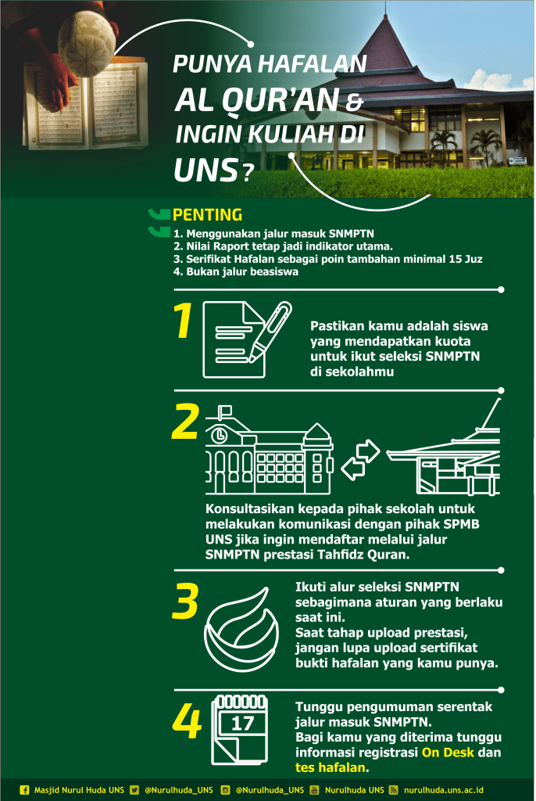

Hampir setiap tahun, memasuki semester genap, ada banyak pertanyaan yang masuk kepada Admin tekait jalur masuk UNS dengan prestasi Tahfidz Al Qur’an. Ada banyak kesalahpahaman yang muncul, antara lain :
1. Adanya anggapan bahwa dengan prestasi tahfidz maka calon mahasiswa baru otomatis bisa masuk ke UNS. Faktanya tidak.
Calon mahasiswa baru yang ingin mendaftar masuk UNS dengan prestasi tahfidz harus melalui seleksi SNMPTN dengan syarat-syarat yang ada.
2. Program prestasi tahfidz ini bukanlah program beasiswa. Untuk mendapatkan beasiswa calon mahasiswa baru antara lain bisa mengakses program bidikmisi mengikuti syarat dan ketentuan yang ada.
PENTING NIH DIBACA YA:
Prinsipnya penerimaan Mahasiswa UNS lewat jalur hafidz Alquran masuk ke dalam program SNMPTN.
Nilai Raport akademik merupakan indikator utama. Hafalan Alquran masuk ke dalam poin prestasi tambahan.
UNS menetapkan standar minimal hafalan adalah 15 Juz.
Pendaftaran SNMPTN akan dimulai tanggal 4 Feb – 6 Februari 2019. Info bisa langsung dicek di sekolah masing-masing atau melalui web snmptn.ac.id
.
ALUR
.
1. Pastikan kamu adalah siswa yang mendapatkan kuota untuk ikut seleksi SNMPTN di sekolahmu.
2. Konsultasikan kepada pihak sekolah untuk melakukan komunikasi dengan pihak SPMB UNS jika ada siswa dr sekolah tersebut yang ingin mendaftar melalui jalur prestasi tahfidz Alquran.
Setelah tahap ini kamu akan diberitahu terkait syarat-syarat tambahan guna kelengkapan administrasi.
3. Ikuti alur seleksi SNMPTN sebagimana aturan yang berlaku saat ini.
Saat tahap upload prestasi, jangan lupa upload sertifikat bukti hafalan yang kamu punya.
4. Tunggu pengumuman serentak jalur masuk SNMPTN universitas negeri Se- Indonesia. Menurut web SNMPTN pengumuman hasil seleksi 23 Maret 2019.
5. Akan ada registrasi on desk dan tes hafalan bagi kamu yang telah diterima.
6. Buat kamu yang keterima lewat jalur ini, kamu akan punya keluarga baru yang namanya ‘Keluarga Huffazh UNS’, disini kamu bakal dapet pembinaan berkaitan dengan Alquran.